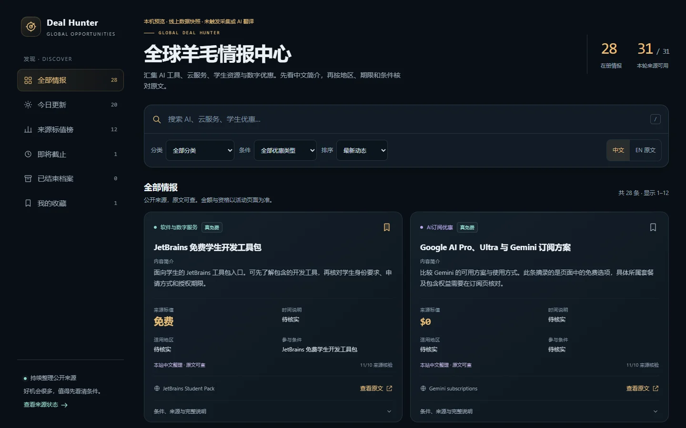
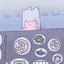
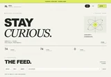
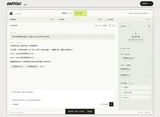
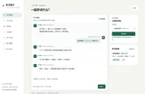
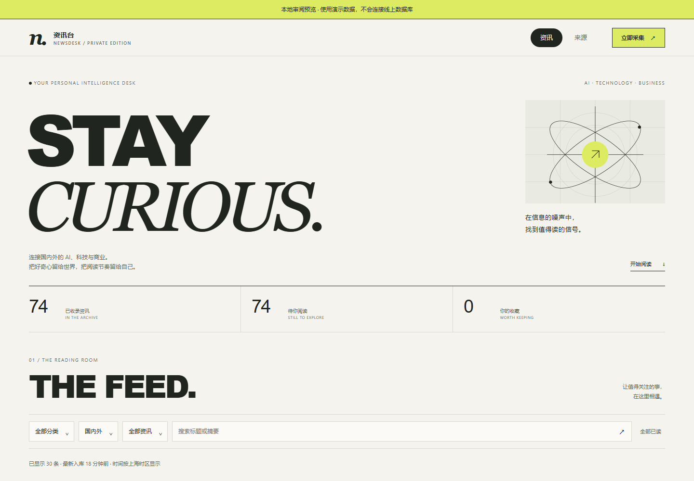

门户版已上线
全球羊毛情报中心Deal Hunter · Read the conditions.
把 AI 工具、云服务、学生资源与数字优惠汇集起来：中文简介、原文对照、分类筛选、本机收藏与分页。
公开优惠门户：今日精选、AI 与云服务频道、可分享的详情页和条件筛选。

新版本机预览 · 公开数据快照
你好，我是工匠@jjh-python667 ↗我是人工智能专业的大一学生，正在巩固 Python 的类与基础。围绕办公、学习与阅读，把想法设计成可运行的小产品，记录实现和验证的过程。
办公 · 学习 · 阅读 / 围绕真实问题设计



优惠情报站、案头、学习搭子、资讯台，以及学习练习
把 AI 工具、云服务、学生资源与数字优惠汇集起来：中文简介、原文对照、分类筛选、本机收藏与分页。
公开优惠门户：今日精选、AI 与云服务频道、可分享的详情页和条件筛选。

新版本机预览 · 公开数据快照把国内外 AI、科技与商业资讯放进自己的阅读台：定时采集、分类搜索、收藏与已读同步。
Cloudflare Workers + D1；私人实例通过 Access 限制登录。本页提供项目介绍与本地演示截图。

本地预览 · 固定演示数据从讨论思路到文件交付：连续调用工具处理表格和文档，配备流式正文、任务取消、本机会话与任务历史。
适合：资料整理、费用汇总、办公报告；当前为本地单用户原型。
 本地演示 · v3.2
本地演示 · v3.2
围绕自己的资料，按「讲解 → 出题 → 答题 → 继续」一步步学习；新版加入邀请登录，每位用户分别保存自己的资料与进度。
适合拿课堂讲义、自学 PDF，或自己写的 Markdown 笔记来练；不是一次性聊天，而是能暂停再继续的任务。
当前进展 v0.4.0 已加入邀请登录与用户隔离。本站提供项目介绍和固定示例，邀请试用准备中。
同一例子：列表从 0 开始索引
可点步骤跳转，也可按「下一步」顺序体验 · 答错可重试 · 方向键移动焦点，Enter/空格激活

没有找到符合条件的作品。试试其他关键词，或选择全部作品。
按仓库最后推送排序 · 最多 3 个原创公开仓
个人 AI 工具工作流学习笔记：连续对话、异步任务与角色分工的概念整理，不提供 Grokbot 产品源码。
Python / Pygame 入门练习：参考《Python 编程：从入门到实践》的外星人入侵项目制作的射击小游戏。
Python 自学记录：从 hello.py 开始，逐步积累基础练习与学习笔记。
给每一次小进步留个位置
仓库已发布第一版，README 写明能力与限制。
相关项目我关注 AI 产品的界面与工作流：先理清一个问题怎样被解决，再借助 AI 编程助手实现、检查和迭代。Python 的类与基础仍在巩固，我希望能越来越多地解释和修改关键代码。
作品集已在 GitHub Pages 公开展示。接下来继续学习 C、C++、算法和 NumPy。